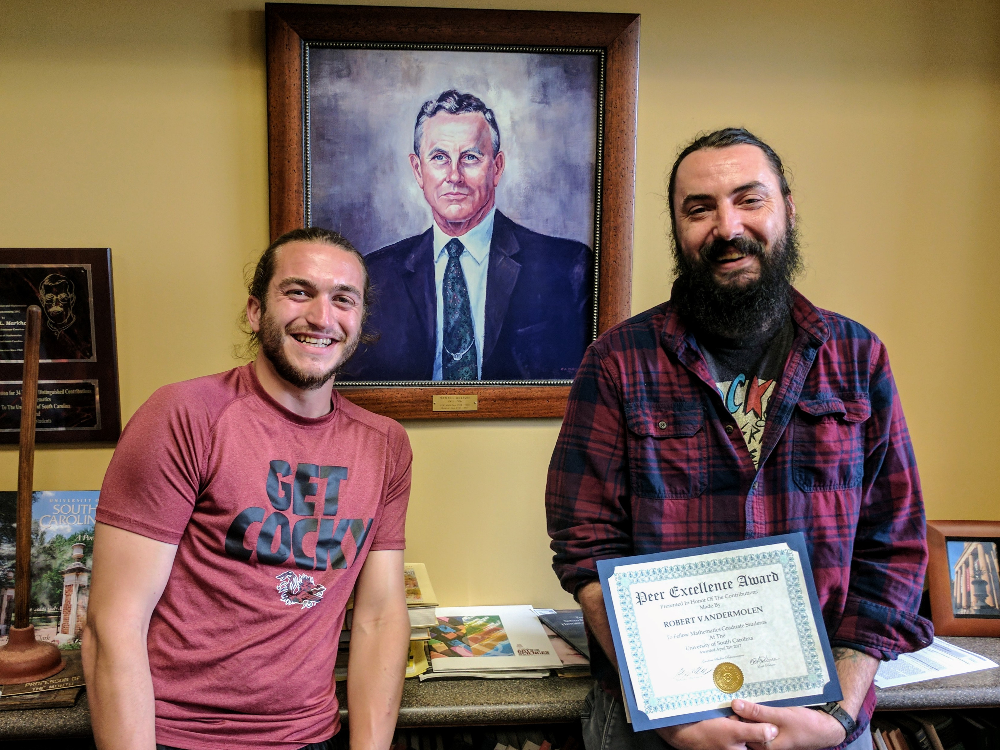
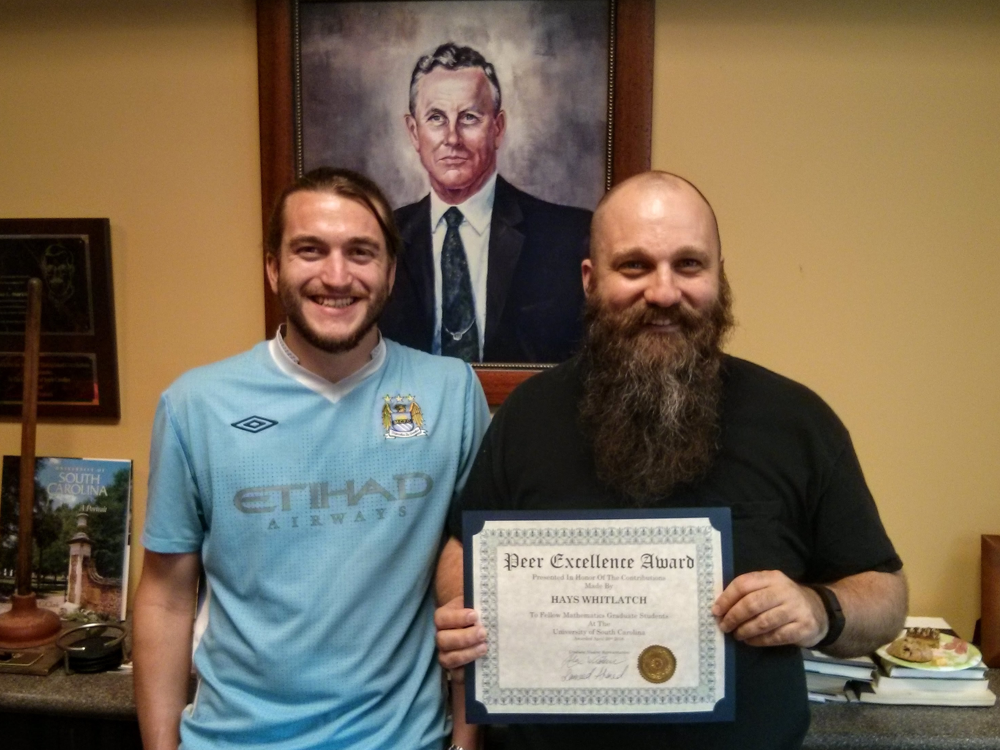
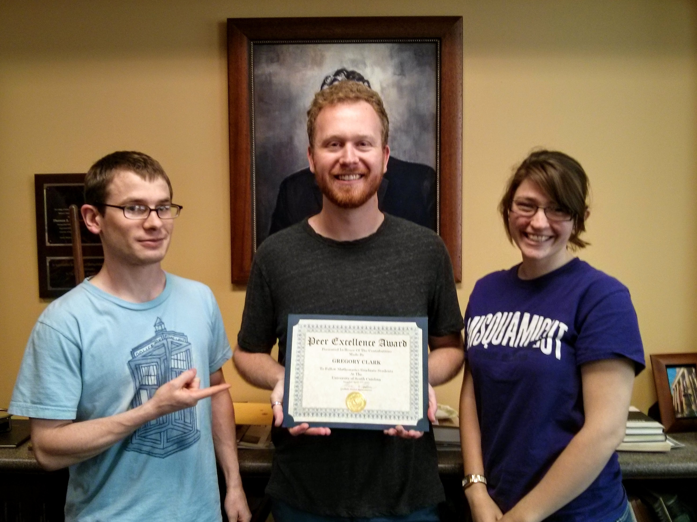
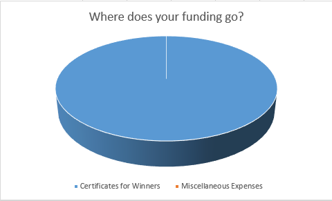

Congratulations to this year's winners!
2017
Winner: Robert Vandermolen
Honorable Mention: Duncan Wright
2016
Winner: Hays Whitlatch
Honorable Mention: Duncan Wright
2015
Winner: Gregory Clark
Honorable Mention: Maria Markovich and Daniel Rorabaugh
The Peer Excellence Award is presented to a graduate student on behalf of their fellow graduate students. The award recognizes the laudable contributions students make to their peers and the scholarly environment.
2017
Sameed Ahmed - Wilson Harvey - Erik Palmer - Robert Wilcox
Gregory Clark - Hays Whitlatch
The Peer Excellence Award was founded in 2015 by some graduate students in LC122.
Why is it called the Peer Excellence Award?
It is an Award chosen by our Peers in recognition of Excellence. Also, no one
has paid $100 to have the award named after themselves.
When will the award be presented?
Monday, April 27th at 3:45pm in the Wyman Williams room during the Department
Awards ceremony.
Do I have to be present to win?
Yes. If you are not present your name will be scratched out and replaced with the
name of the runner-up.
How do I choose who to vote for?
Vote for the graduate student that is the most excellent. You get to define excellence.
For help, Webster's Dictionary defines excellence as "the quality of being excellent."
Can I support the Peer Excellence Award? Yes!
Wilson Harvey ● Daniel Rorabaugh ● Robert Wilcox ● Alex Wiedemann ● Hays Whitlatch ● Sameed Ahmed ● Gregory Clark ● Garner Cochran ● Robert Vandermolen